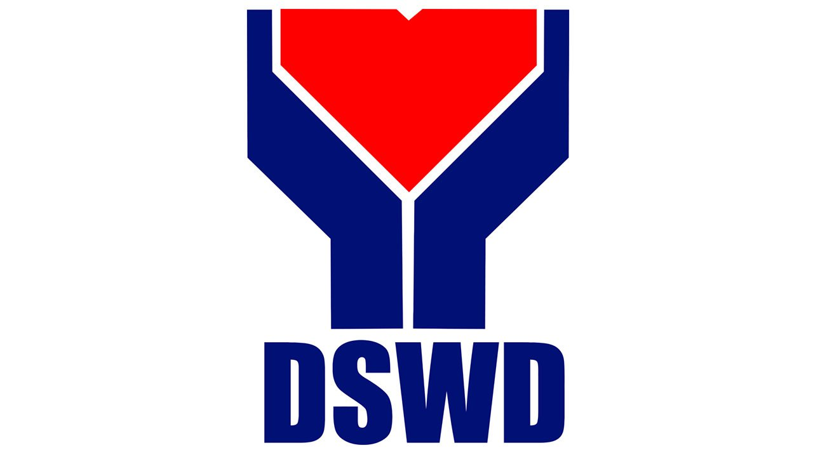

Task Management
Organize applications with boards, lists, and calendar views. See what's pending, in progress, or ready for the next step.

DSWD Aid Assistance Appointment Scheduling SystemA simpler way to apply for social assistance, submit requirements, and schedule appointments. Keep every step organized with one clear, accessible digital experience for applicants and DSWD staff.
Welcome back. Here's your service summary.
From submitting an application to reviewing cases, keep assistance workflows organized and easy to follow.
Organize applications with boards, lists, and calendar views. See what's pending, in progress, or ready for the next step.
Fill out an application, attach supporting documents, choose an available appointment, and track updates in one place.
Review submissions, check requirements, update application statuses, and manage appointment schedules efficiently.
A straightforward process helps applicants and staff stay organized.
Use your account to access the portal. Staff and applicants have separate entry points.
Applicants fill out forms and upload requirements. Staff review and process applications.
Track application updates, check appointment details, and follow portal instructions.
Requirements may differ depending on the type of assistance and your situation. Check the latest official guidance or contact your local DSWD office before submitting documents.
"Having the steps and requirements in one place would make it easier for applicants to know what to prepare and what to do next."
Quick answers to common questions about applying for assistance.
Choose the right portal to start or manage an assistance request.